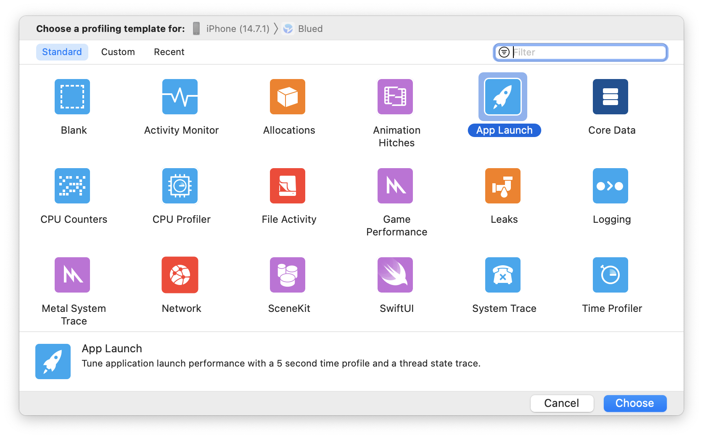
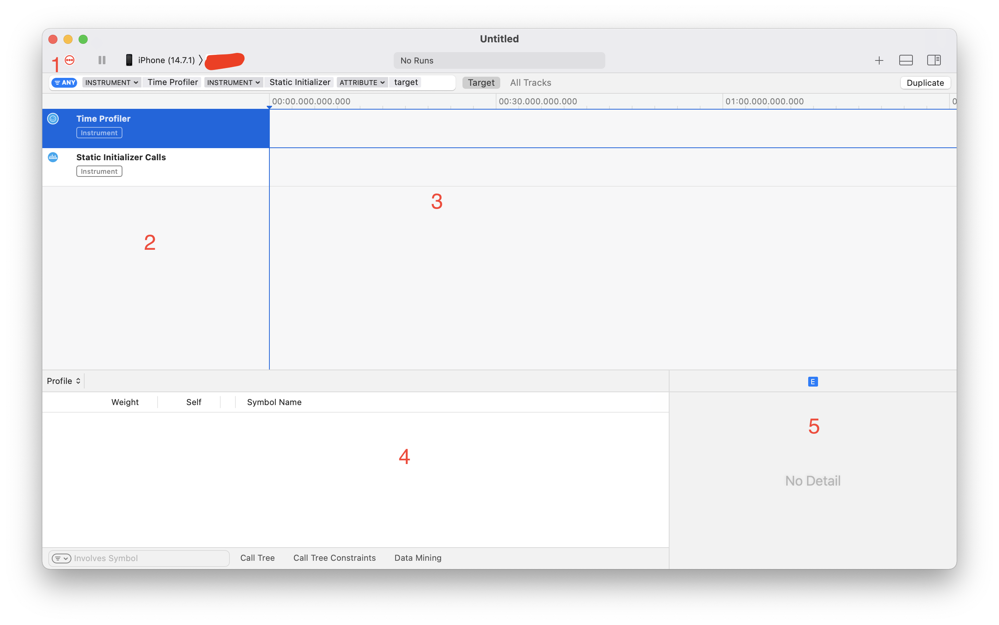
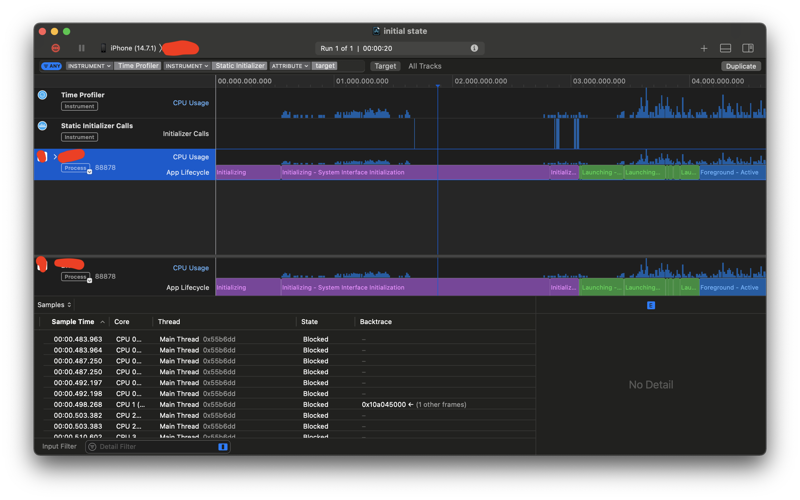
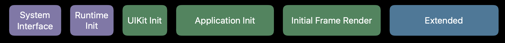
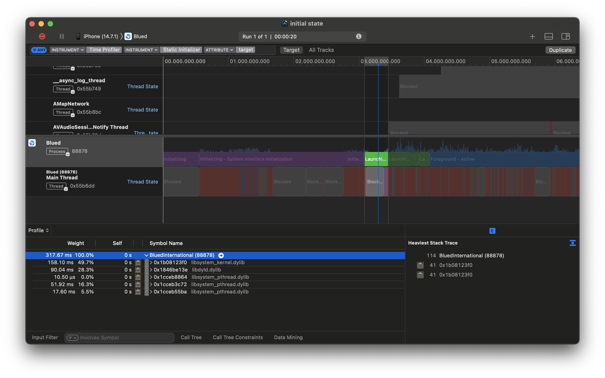

使用Instruments了解iOS应用启动时长（Xcode13）
应用的启动过程是用户对一个应用的最初印象，并且是用户每天都要进行很多次的动作。所以应用的启动时长是非常最要的，我们iOS开发程序员对这个性能指标应该有足够的重视。
而在进行优化之前一项必须要做的工作就是监测应用时长具体的状况，那么这篇文章就学习一下怎么利用Instruments工具来检查应用的启动时长。 应用的启动过程是用户对一个应用的最初印象，并且是用户每天都要进行很多次的动作。所以应用的启动时长是非常最要的，我们iOS开发程序员对这个性能指标应该有足够的重视。
而在进行优化之前一项必须要做的工作就是监测应用时长具体的状况，那么这篇文章就学习一下怎么利用Instruments工具来检查应用的启动时长。
到公众号【iOS开发栈】学习更多SwiftUI、iOS开发相关内容。
启动Instruments之前的准备工作
- 确定自己的App确实在启动时长方面需要优化。这个其实很好判断，把App杀死然后稍微等待十几秒，之后点击应用图标开始计时，到应用的第一个页面展示出来结束计时，如果时长超过3s，那么就建议进行优化。除了这个方法还可以使用Xcode的Organizer统计来查看线上用户的启动时长分布。
- 使用真机。对应用性能进行测量或者优化的过程强烈建议使用真机进行，因为这才是用户的使用环境。而模拟器使用的是Mac的硬件和系统，跟真实的使用环境差别较大。
- 这篇文章使用的环境是：Xcode13 Beta版，macOS Big Sur，iOS 14.7。
Instruments界面介绍
建议通过Xcode启动Instruments，这样自动会把编译环境指定为Release，而在Release环境下编译器会进行优化从而加快程序的启动速度。Xcode启动Instruments有三种方式：
- 长按Xcode左上角的运行按钮，之后在弹出的下拉菜单中选择Profile。
- 在Xcode的菜单中选择Product->Profile。
- 使用快捷键 ⌘ + i
Xcode会重新编译项目，编译完成后Instruments主界面就会展示出来。

通过双击App Launch打开App Launch的界面。

- “1”是开始录制按钮。
- “2”和“3”列出每个CPU的执行情况，后面详细描述。
- “4”会展示CPU或者线程在某个时间段的详细情况。
- “5”会展示程序调用栈。
下面用一个例子说明。
Instruments分析示例项目
点击上图中的“1”红色按钮开始进行启动时长分析，点击后会陆续出现“Recording”和“Analysing”，整个过程大概会持续几分钟。之后就会看到应用的整个启动时长分析结果：

先来看“2”分区，上面有“Time Profiler”、“Static Initilizer Calls”、“「我的应用」”三行，这里我们只需要关注第三行。
然后来看“3”分区的第三行，这一行就是我们正在分析的应用启动过程中的具体步骤分别占用的时间。这里被分成了紫色、绿色和蓝色三大块。

其中的紫色和绿色块是整个app的启动过程，蓝色块表示程序已经启动，而在这个示例中可以看到此App的启动过程总共耗时大概4s——明显有问题。
点击「项目名称」左侧的箭头来查看具体的线程情况，并使用滚轮拖动到最下面可以看到“Main Thread”。通过放大（在触控板上双指捏合可以放大/缩小（⌘+/⌘-））可以看到整个Main Thread被填充了各种颜色，每一种颜色表示了主线程当时的状态。
- 灰色表示被卡住了，也就是说当前线程没有执行任何工作。
- 红色表示当前线程可执行但是却没有得到执行，意味着当时缺少CPU资源可供使用。
- 橙色表示被打断，意味着当前线程正在进行工作的过程中被一个优先级更高的线程打断了。
- 蓝色表示正在执行，意味着这个线程的工作整个被CPU执行。
将鼠标放在“2”区的任意一行上时会看到有一个“+”号出现，点击这个“+”号该行会被固定在下面——可以叫“置底”，这个功能非常方便。建议在使用过程中至少将“Main Thread”和整个项目的行置底。将鼠标放在置底栏上边缘（稍宽的灰色部分）可以上下拖拽置底栏来放大/缩小整个区域。
要对具体某一块的状态进行分析可以通过三击某个色块或者单击后拖动来选中某一个时间段，当选中以后区域“4”就会展示该时间段内的调用情况。

选中时间段后可以通过点击“Profile”区域来切换要查看的类别。这里用的最多的就是“Profile”，切换到Profile时区域“4”会展示出每个任务的耗时及其占比，点击其中的箭头还可以查看调用堆栈，而选中某一行后在区域“5”可以看到更全面的调用堆栈。
这样我们就可以分段对整个启动过程进行详细的分析，并找出其中耗时较高的地方，将它优化掉来加快应用的启动过程。
到公众号【iOS开发栈】学习更多SwiftUI、iOS开发相关内容。
总结
这篇文章主要的目的是了解Instruments工具在进行应用启动优化时的使用方法，由于篇幅有限这里不对具体的性能分析做过多介绍，后面会有专门的文章来介绍具体的优化细节，感性的同学可以关注我的公众号“iOS开发栈”。